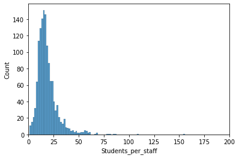
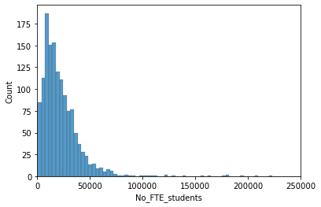
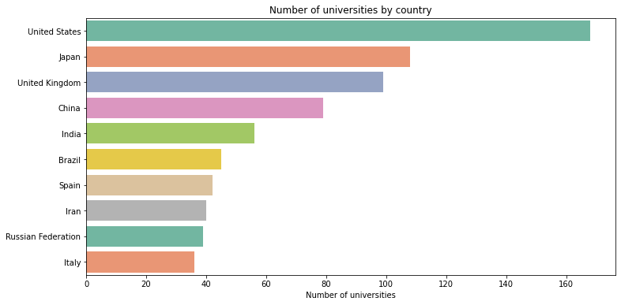
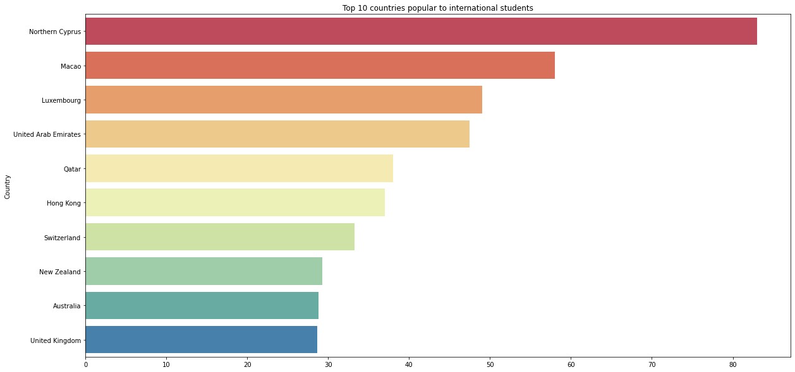

Python Project
Times Higher Education's World university ranking Analysis.
The Data Source
I used Python's library Selenium to scrape datasets from the Times Higher Education official website. The data included 2 tables: stats and scores. You can read more about the ranking methodology in this article.
Set up
import requests
from bs4 import BeautifulSoup as soup
import re
from selenium import webdriver
import datetime
import urllib3
import warnings
warnings.filterwarnings("ignore")After scraping the data, I convert them to Pandas dataframes and merge them.
stats_df = pd.DataFrame(row_list)
scores_df = pd.DataFrame(row_scores_list)
final_df = stats_df.merge(scores_df, on = ['Rank','University'])
Data Cleaning & Transformation (Pandas and Numpy)
The data is very unstructured. To create the necessary data for doing analysis, I need to examine and clean the data.
Set up
import pandas as pd
import numpy as np
import seaborn as sns
import matplotlib.pyplot as plt
%matplotlib inline
import sys
sys.path.append('utils.utils.py')
import utils as utils
pd.set_option('display.max_rows', 500)Checking and filling Nan values.
df.isnull().sum()
Cheking and dropping duplicated rows
df.duplicated().sum()
Cleaning some variables, using the correct data types
Here're some examples:
df.No_FTE_students = df.No_FTE_students.apply(lambda x: x.replace(',','')).astype('int')
#This column also have the data type of object, so we will need to remove the % characters
df.International_students_pct = df.International_students_pct.apply(lambda x: x.split('%')[0])
df.International_students_pct = df.International_students_pct.apply(lambda x: x.strip())
df.International_students_pct.replace('', 0, inplace = True)
#convert to float data type
df.International_students_pct = df.International_students_pct.astype('float')
Checking for some Univariate Statistics.
utils.unistats(df)
Remove Outliers
-I see some of my variables have very high skewness. Let's check that out.

-Let's remove those outliers.
def remove_outliers(df, col):
q25, q75 = df[col].quantile(0.25), df[col].quantile(0.75)
iqr = q75 - q25
cut_off = iqr * 1.5
lower, upper = q25 - cut_off, q75 + cut_off
outliers = [x for x in df[col] if x < lower or x > upper]
outliers_removed = [x for x in df[col] if x>lower and x< upper]
df = df[df[col].isin(outliers_removed)]
return df
df = remove_outliers(df,'No_FTE_students')
df = remove_outliers(df, 'Students_per_staff')
Checking for some Bivariate Statistics.
utils.bivstats_table(df, 'Rank')
Exploring and visualizing data
Below are some graphs I made using Matplotlib and Seaborn during my exploratory phase.
 